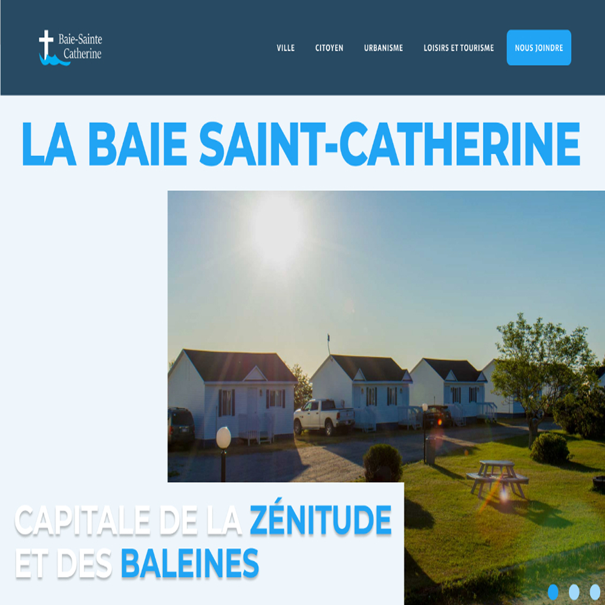
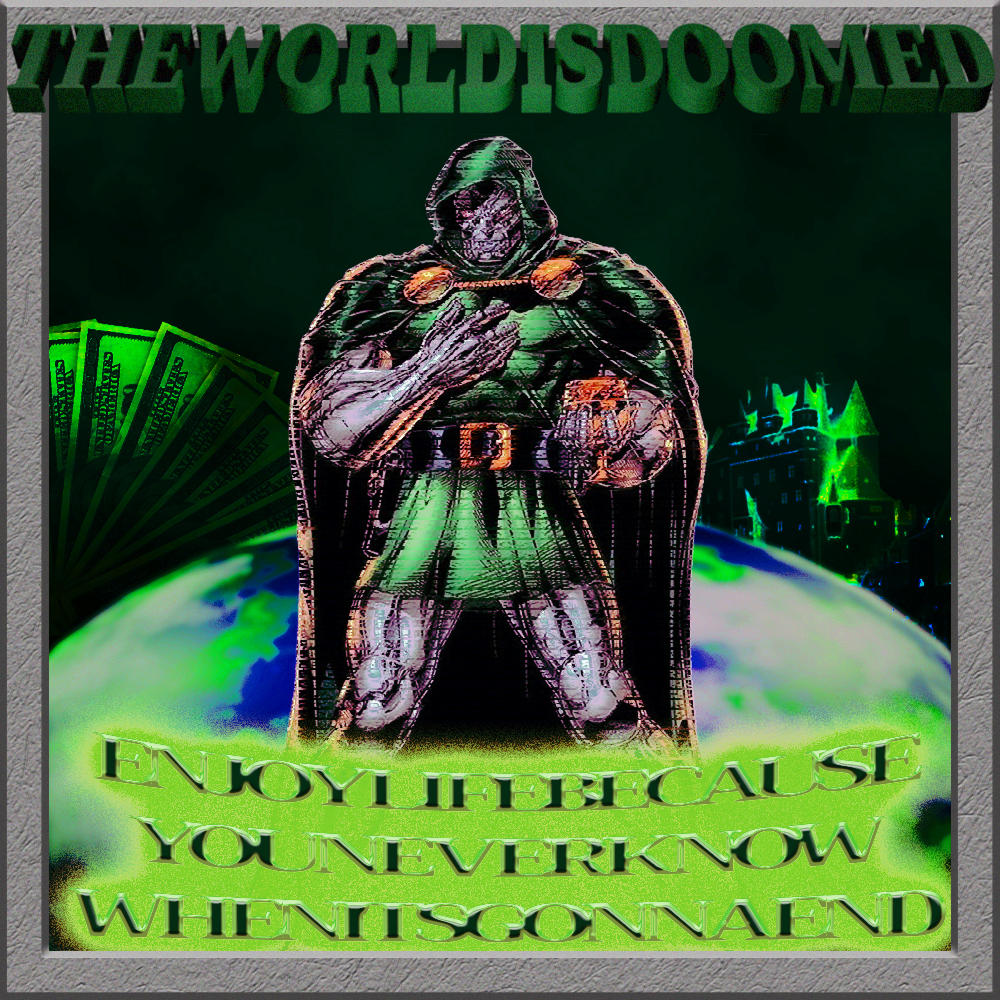
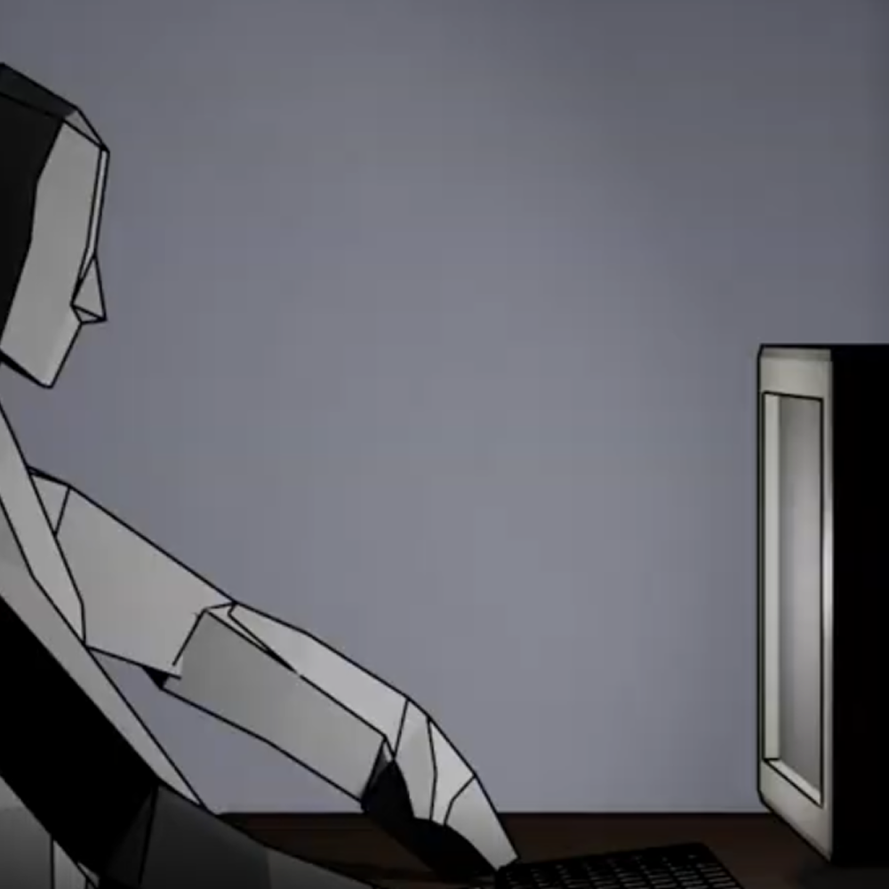
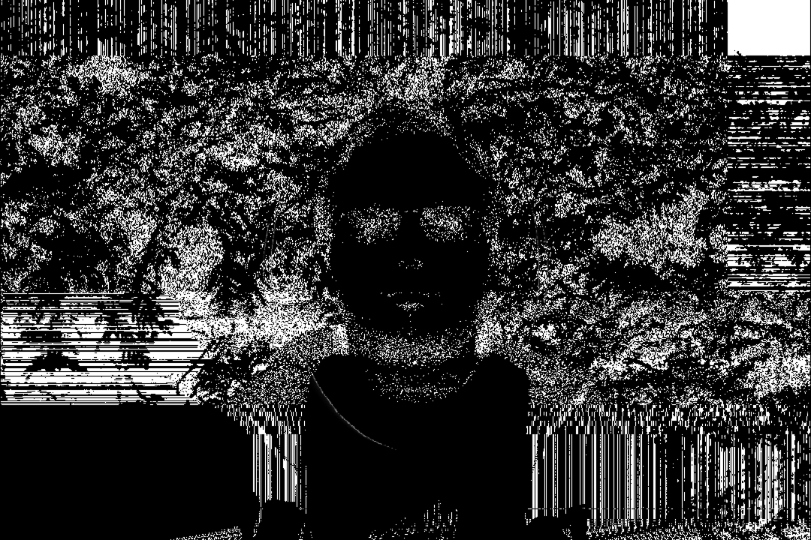
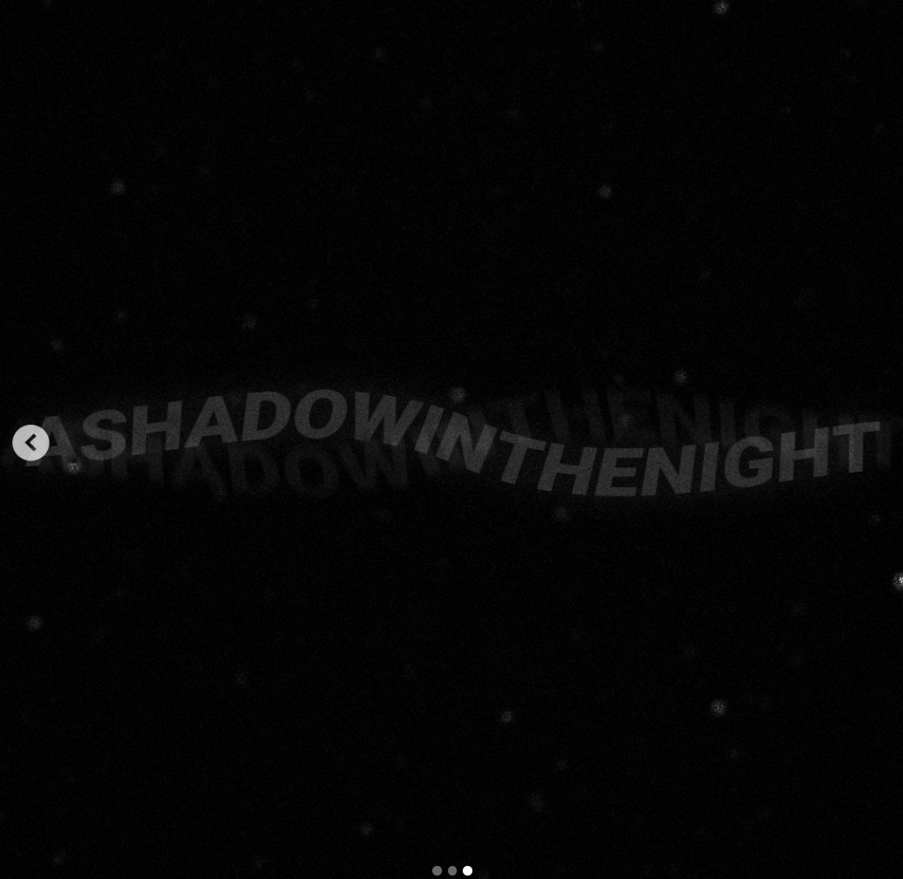
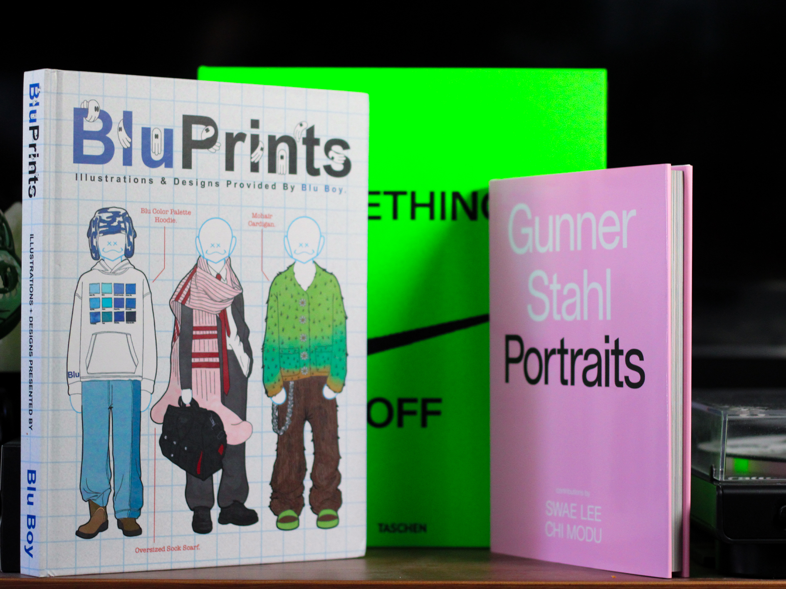

VOIR LE PROJET SUR BEHANCE
SITE PROMOTIONNEL | PROJET SCOLAIRE | 2025
Un site municipal avec une navigation modernisée et simple.

VOIR LE PROJET SUR BEHANCE
COUVERTURE DE PLAYLISTE | PROJET PERSONNEL | 2025
Un visuel parodique du style ‘pen & pixel’ avec Dr Doom.

VOIR LE PROJET SUR BEHANCE
COURT FILM D’ANIMATION | PROJET SCOLAIRE | 2024
Un questionnement sur la réalité du personnage.

VOIR LE PROJET SUR BEHANCE
VISUEL INTERACTIF | PROJET SCOLAIRE | 2024
Un visuel style camera de sécurité avec de la distortion.

VOIR LE PROJET SUR BEHANCE
COUVERTURE DE PLAYLISTE | PROJET PERSONNEL | 2025
Un visuel sombre et simple d’une playliste du même style.

VOIR LE PROJET SUR BEHANCE
SITE PROMOTIONNEL | PROJET SCOLAIRE | 2025
Un site municipal avec une navigation modernisée et simple.